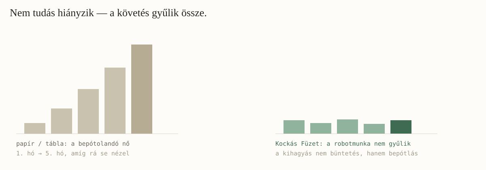
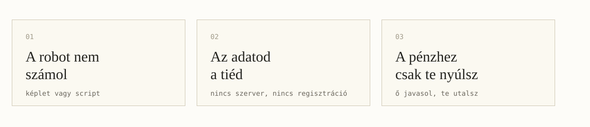
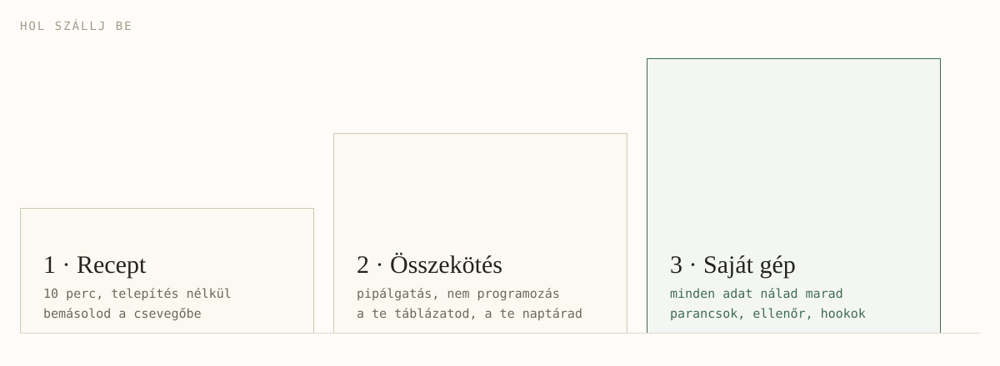
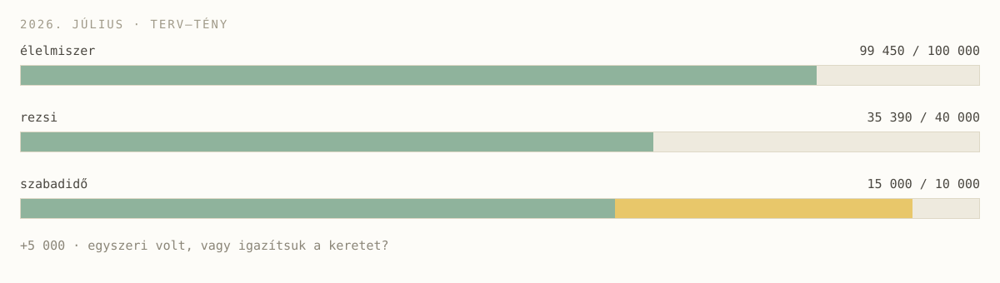
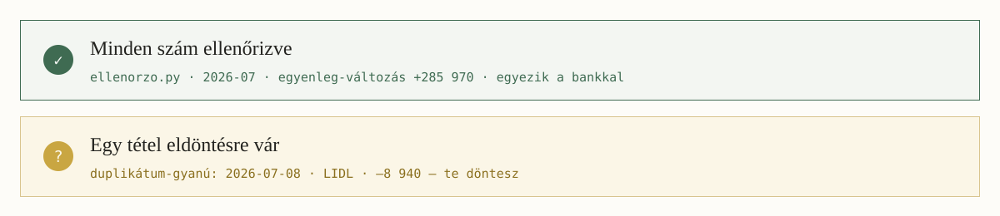
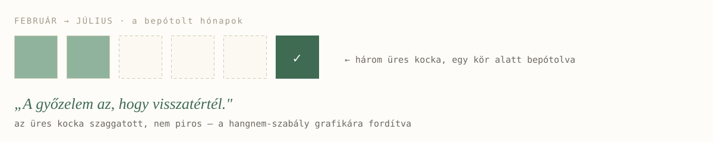

a kockás füzet, ami visszaír
a robot nem számol · az adatod a tiéd · a pénzhez csak te nyúlsz
Június elsején leültem havi zárást csinálni, és a beszélgetőablakban a robot megállított: a szokásos havi rendezvényemre most 15 ezer forint ment el a megszokott 8 helyett — ez most más volt, vagy csak drágult?
Jubileumi alkalom volt, írtam vissza. Elkönyvelte, a többi költésem stimmelt, öt perc múlva kész volt az elszámolásom.
Nem pénzügyi app. Egy AI-csevegő, aminek magyarul, sima mondatokban írom meg, mit szeretnék.

Nem a tudás hiányzik. A követés a munka — és a kimaradás után a bepótolandó gyűlik.
A robotmunkát a gép viszi. A döntés a tiéd.
ez az egész gyűjtemény egy mondatban

Ez a három elv minden receptben, minden riportban és minden ábrán visszatér.

Az első lépcső ma este letudható, ingyen, telepítés nélkül. A harmadikhoz sem kell programozni — ott is beszélgetsz.
Attila feltöltötte a banki ajánlat PDF-jét a csevegőbe, és megkérdezte, melyik lekötés való neki. Megkapta az összehasonlítást, döntött.
Aztán a gép megjegyezte: érdemes lenne emlékeztetőt felvenni a lejáratra. Mire Attila: mi lenne, ha te vennéd fel?
A csevegő válaszol. Az ügynök megcsinál valamit — a te szabályaid szerint, a te jóváhagyásoddal.

A túllépés sárga és kérdés — sosem piros és vád: egyszeri volt, vagy igazítsuk a keretet?

A számot script vagy táblázat-képlet adja, nem a gép fejszámolása. Két állapot van: ellenőrizve, illetve döntést kér.

Nincs „megint", nincs „sajnos", nincs lista a hátralékról. Csak bepótlás, egy körben.
Kísérlet, nem kész termék. Szólj bele.
github.com/gomboczmarton/kockas-fuzet · MIT